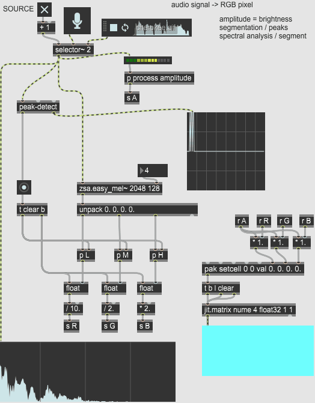

class: center, middle .title[Creative Coding and Software Design 2] <br/><br/> .subtitle[Signal analysis] <br/><br/><br/><br/><br/><br/> .date[Apr 2023] <br/><br/><br/> .note[Created with [Liminal](https://github.com/jonathanlilly/liminal) using [Remark.js](http://remarkjs.com/) + [Markdown](https://github.com/adam-p/markdown-here/wiki/Markdown-Cheatsheet) + [KaTeX](https://katex.org)] ??? Author: Grigore Burloiu, UNATC --- name: toc class: left # ★ Table of Contents ★ <!-- omit in toc --> 1. [Review: Max objects](#review-max-objects) 2. [Signals](#signals) 3. [Tools](#tools) 4. [Assignment](#assignment) <!-- Comment out the next slide if you don't want the Table of Contents link --> --- layout: true .toc[[★](#toc)] --- name: review-max-objects # Review: Max objects trigger, scale, slide, cycle~, avg~ ... pack, zl, route udpsend, udpreceive, OSC-* node.script jit.matrix, jit.grab, jit.spill ... --- name: signals # Signals | **signal** | **sampling rate** (Hz) | **frequency range** (Hz) | |--------|---------------|-----------------| |audio| 44100-96000 | 20-20000 | |EMG | [1000](https://www.sciencedirect.com/science/article/abs/pii/S0268003303000895) | [5-500](https://www.researchgate.net/figure/Frequency-spectrum-of-EMG-signal_fig2_232905752) | |EEG| 128-512 | 0.5-30 | |motion | 30-1000 | [0-20](https://pubmed.ncbi.nlm.nih.gov/3980487/) | |video| 15-60 | | --- ## Capturing articulation “The problem [...] is that, to really play [the music], and for the audience to see that the dancers are playing, you need to move like a musician. [T]he movement of the dancer needs to be in service of the sound. [...] But this is not the gestalt that we perceive when we watch a dancer move. We really see energy – We're [...] looking at the way that the dancer moves through space and the overall articulation of the movement.” Marc Coniglio (2002), cited in [Schacher, 2010](http://www.nime.org/proceedings/2010/nime2010_250.pdf) --- ## Processing signals data preprocessing - ... analysis - ... action - ... --- ## Processing signals data preprocessing - filtering, rectification, windowing, envelope following, normalisation analysis - amplitude, speed/frequency, segmentation, direction/orientation, spectral action - momentary/atomic trigger, discrete selection, continuous mapping --- class: center ## Example  --- name: tools # Tools (MSP) objects external packages see also [resources](../resources#signals) and [discussion forums](https://cycling74.com/forums/how-to-mix-eul-quater-maths-and-motion-sensors) --- ## Useful objects sig~ ↔ snapshot~ abs~, scale~, slide~ peakamp~, fzero~, zerox~, thresh~, edge~ function + line~, curve~ --- ## Useful packages CNMAT externals jasch objects zsa.descriptors [odot](https://github.com/CNMAT/CNMAT-odot) [MuBu](https://forum.ircam.fr/projects/detail/mubu/) / [pipo~] [FluCoMa](flucoma.org) --- name: assignment class: left # Assignment sonify an RGB pixel (or an array of pixels) - *might use audio-rgb.maxpat as source, or not*